Figuur 1
G.
Zoals reeds eerder besproken (deel 1) is de toestand, waarin de materie zich bevindt, afhankelijk van de toestandsveranderlijken p, V en T. Tussen deze grootheden bestaat er een verband, weergegeven door de toestandsvergelijking en/of voorgesteld in een toestandsoppervlak. Andere eigenschappen van de stof worden vaak uitgedrukt in functie van deze toestandsgrootheden.
Figuur 1
Zoals zoveel fundamentele wetten in de fysica heeft ook ‘de ideale gaswet’ een lange geschiedenis achter de rug. De verschillende achtereenvolgende versies ervan zouden we kunnen verifiëren met behulp van de ‘universeel opgevatte’ experimentele opstelling voorgesteld in figuur 1.
We stellen ons voor dat we in deze opstelling volgende grootheden kunnen la-ten variëren en opmeten:
- het volume V
- de druk p
- de temperatuur T
- de hoeveelheid aanwezig gas, uitgedrukt met het aantal mol n.
Op basis van metingen kunnen volgende wetmatigheden vastgesteld worden:
het volume, ingenomen door een hoeveelheid ‘ideaal gas’, varieert omgekeerd evenredig met de druk ( wet van Boyle-Mariotte , 17de eeuw):
(indien we, bij gelijk blijvende temperatuur en hoeveelheid gas, de druk in de cilinder verdubbelen, dan halveert het volume dat door het gas wordt ingenomen.)
is n = cte en T = cte Þ V ) 1/p
het volume, ingenomen door een hoeveelheid ‘ideaal gas’, varieert recht evenredig met de temperatuur ( wet van Gay-Lussac, 18de eeuw):
(indien we, bij gelijk blijvende druk en hoeveelheid gas, de temperatuur in de cilinder verdubbelen, dan verdubbelt het volume dat door het gas wordt ingenomen.)
is n = cte en p = cte Þ V ) T
de druk, die in het reservoir heerst is rechtstreeks evenredig met de (absolute) temperatuur in het reservoir (wet van Charles, 18de eeuw):
(indien we het volume ingenomen door een hoeveelheid gas gelijk houden, dan resulteert een verdubbeling van de temperatuur in een verdubbeling van de druk).
is n = cte en V = cte Þ p ) T
het volume, ingenomen door een ‘ideaal gas’, is rechtstreeks evenredig met het aantal mol aanwezig in de cilinder (de wet van Avogadro, 19de eeuw):
(indien we, bij gelijk blijvende druk en temperatuur, de hoeveelheid gas verdubbelen, dan verdubbelt het volume dat door deze hoeveelheid wordt ingenomen).
is p = cte en T = cte Þ V ) n
Zoals gebruikelijk in de fysica kunnen deze experimenteel vastgestelde relaties samengebracht worden in een vergelijking (de formule van Clapeyron):
p : de druk
V: het volume
T: de temperatuur
n: het aantal mol
R: de universele gasconstante
In zulke vergelijking is R een grootheid, die voor elk type gas moet opgemeten worden; ze is in principe voor elk gas verschillend; het is een grootheid, die de materie in bovenstaande aspecten karakteriseert.
Uit metingen bleek echter dat deze waarde voor alle gassen (nagenoeg) dezelfde is, tenminste indien men de experimenten uitvoert bij temperaturen die ‘hoog genoeg’ zijn en bij ‘betrekkelijk lage’ drukken. Men vond in die omstandigheden de waarde

Onder die voorwaarden spreekt men dan ook van een ‘ideaal gas’.
Hoewel de ideale gaswet in oorsprong een ervaringswet was, gebaseerd op macroscopisch observeerbare experimentele gegevens, kon ze later ook geverifieerd worden vanuit een geïdealiseerd model van een gas in de zogenaamde ‘kinetische gastheorie’; hierin kon het begrip druk in verband gebracht worden met de kinetische energie van de gasmoleculen en dus met de temperatuur.
Strikt genomen spreekt men over een ‘ideaal gas’ wanneer bovenstaande vergelijking geldig is voor alle drukken en alle temperaturen. Reële gassen beantwoorden het best aan deze geïdealiseerde vergelijking wanneer de druk betrekkelijk laag is (enkele bars) en de temperatuur beduidend hoger is dan deze waarbij het gas door compressie overgaat in een vloeibare fase: onder die voorwaarden blijven de gasmoleculen betrekkelijk ver van elkaar verwijderd (men spreekt dan van een ‘ijl gas’) en bewegen ze met een relatief hoge snelheid zodat ze goed aan het geïdealiseerd gasmodel beantwoorden. In het (p,V)-diagram worden de evenwichtstoestanden voorgesteld door hyperbolen (zie toestandsdiagramma - deel 1).
De ideale gaswet leidt, indien men een welbepaalde hoeveelheid van een ideaal gas beschouwt, tot volgende erg bruikbare uitdrukkingen (de ‘algemene gaswet’):
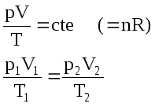
De ideale gaswet kan theoretisch geverifieerd worden met behulp van een vereenvoudigd moleculair model voor een gas, waarin het volume ingenomen door de moleculen zelf en hun onderlinge aantrekkingskrachten worden verwaarloosd.
De van der Waalsvergelijking voert correcties in die rekening houden met deze aspecten en die verwaarloosbaar worden wanneer de druk laag en/of de temperatuur hoog genoeg zijn, maar die belangrijk worden wanneer druk en temperatuur in de buurt komen van deze van het coëxistentiegebied (zie deel 1):
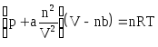
a en b hierin zijn experimenteel vast te leggen gegevens, die voor elk gas verschillend zijn. Ruwweg gesproken hebben ze volgende fysische betekenis:
b komt overeen met het volume dat ingenomen wordt door de moleculen zelf in één mol van het gas; is er n mol gas aanwezig dan nemen de moleculen zelf een volume in gelijk aan nb en blijft er een volume (V-nb) over waarin de moleculen vrij kunnen bewegen.
a houdt verband met de aantrekkingskrachten die tussen de moleculen bestaan; er kan aangetoond worden dat deze krachten een extra druk tot gevolg hebben, die evenredig is met het kwadraat van het aantal mol n dat per volume-eenheid aanwezig is: (n/V)2.
Om het relatieve belang van deze correctiefactoren in te schatten, herschrijven we de van der Waalsvergelijking:
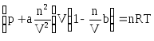
Indien (n/V) heel klein is (in het geval van een ‘ijl’ gas) worden de correcties heel klein en gaat de ‘van der Waalsvergelijking’ over in de ‘ideale gaswet’. Is het aantal mol n in het volume aanwezig groot, dan worden de correcties belangrijker.
Reële gassen beantwoorden goed aan de ‘ideale gaswet’ indien ze gebruikt worden bij niet al te hoge drukken en bij vrij hoge temperaturen. In dat geval komen de basisassumpties - verwaarlozing van het moleculevolume en van de intermoleculaire krachten - goed overeen met de werkelijkheid. In tal van technische toepassingen maakt men echter gebruik van gassen en gasmengsels bij zeer hoge drukken; in dat geval wijken gegevens bepaald uit de ideale gaswet te veel af van de werkelijkheid. De van der Waalsvergelijking voert enkele wetenschappelijk gefundeerde correcties in ten aanzien van deze assumpties. In de techniek gaat men echter vaak veel pragmatischer te werk en past men de ideale gaswet aan met een experimenteel te bepalen correctiefactor K:
De correctiefactor K stelt de mate voor waarin het reële gas afwijkt van het ideaal gas en wordt experimenteel vastgelegd in functie van druk en temperatuur. Men vindt dergelijke waarden in tabellen en grafieken van technische vademeca.
Tabel 1 geeft enkel waarden van K in het geval van lucht.
|
Correctiefactor K voor lucht |
|||
|
druk p = |
T = 0 °C |
T = 100 °C |
T = 200 °C |
|
1 bar |
1,0 |
1,0 |
1,0 |
|
20 bar |
0,9895 |
1,0027 |
1,0064 |
|
100 bar |
0,9699 |
1,0235 |
1,0364 |
|
Tabel 1 |
|||
Figuren 2 en 3 geven deze waarden voor enkele gassen in grafiekvorm.
Figuur 2
Figuur
3
Vele gassen zijn mengsels van verschillende componenten. Een goed voorbeeld is lucht; in de omgeving van de aarde heeft lucht ongeveer volgende samenstelling:
78 % N2
21 % O2
1 % andere gassen, o.a. waterdamp
Elke component draagt in verhouding tot zijn relatief aandeel bij tot de totale druk in het gasmengsel.
Beschouwen we bijvoorbeeld een willekeurig gasmengsel,
dat bestaat uit een aantal m componenten i: i = 1, 2, ...., m,
die elk in een bepaalde hoeveelheid aanwezig zijn in een volume V: n1, n2, n3, ..., nm.
We noemen pi, de partieeldruk van component i,
de druk die er zou heersen mocht het gegeven volume V enkel de hoeveelheid ni van de component i bevatten.
Volgens de ideale gaswet geldt: 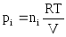
De wet van Dalton stelt dat:
de totale druk van het gasmengsel in het volume V gelijk is aan de som van de partieeldrukken:
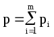
Met dit gegeven wordt de ideale gaswet voor gasmengsels:
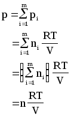
n is hierbij het totaal aantal mol van alle componenten samen, aanwezig in het volume V.
De partieeldruk kan dan als volgt geschreven worden:
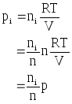
waaruit:
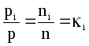
Of met andere woorden (wet van Dalton - 2):
De partiële dampdruk van een gas in een mengsel verhoudt zich tot de totale druk van het mengsel zoals de molaire fractie van die component in het mengsel aanwezig.
Voor een mengsel van reële gassen moeten we eventueel rekening houden met de correctiefactoren Ki:
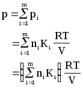
1. Bepaal het volume dat ingenomen wordt door één mol van een ‘ideaal gas’ bij ‘gestan-daardiseerde druk en temperatuur’.
Oplossing:
Men gaat uit van volgende ‘gestandaardiseerde atmosferische omstandigheden’:
T = 0 °C = 273 K
p = 1 atm = 1013 mbar = 1,013 . 105 Pa
Verder is:
n = 1 mol
R = 8,315 J/(mol)K
Met deze gegevens schrijven we:
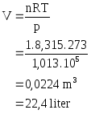
2. Bepaal de ‘molaire massa’ van lucht bij 1 bar en 0 °C. Lucht is een gasmengsel, bestaande uit 78 % stikstof, 21 % zuurstof en 1% andere gassen. De molaire massa van zuurstof en stikstof bedraagt respectievelijk 32 en 28 kg/kmol.
Oplossing:
We schatten de molaire massa van lucht door te stellen dat deze bestaat uit 80 % stikstof en 20 % zuurstof:
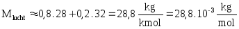
3. De inhoud van een zuurstoftank voor diepzeeduiken bedraagt typisch 11 liter. Een ‘geledigd’ reservoir bevat nog altijd 11 liter lucht bij ongeveer 21 °C en 1 atmosfeer. Lucht is een gasmengsel, bestaande uit 78 % stikstof, 21 % zuurstof en 1% andere gassen; de ‘gemiddelde molaire massa’ van dit mengsel bedraagt 28,8 gram/mol = 28,8.10-3 kg/mol. Hoeveel kg ‘bruikbare lucht’ kan in de zuurstoftank opgeslagen worden, indien men deze met behulp van een compressor kan vullen met lucht bij een temperatuur van 42 °C en een overdruk van 2,1x107 Pa.
Oplossing:
We bepalen eerst het aantal mol lucht dat nog aanwezig is in een ‘geledigde’ tank. We werken hierbij met de absolute waarden voor druk en temperatuur:
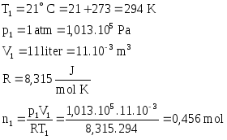
We bepalen op een gelijkaardige manier het aantal mol lucht in een gevulde tank:
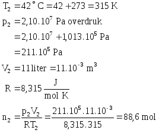
Het aantal mol lucht dat bij de vulling aan de tank wordt toegevoegd bedraagt dus:
Het aantal kg lucht dat opnieuw kan gebruikt worden bedraagt:
2. Eigenschappen van gassen
De ideale gaswet kan als volgt herschreven worden:
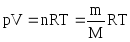
m: de totale massa van het gas in het volume V aanwezig
M: de molaire massa van het gas
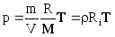
r: de dichtheid van het gas
Ri:
de individuele gasconstante; deze is voor elk gas verschillend; in
tabel 2 werden deze waarden voor enkele gassen opgenomen.
Tabel 2
De dichtheid van een ideaal gas kan dan bepaald worden uit:
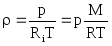
De dichtheid van een reëel gas kan gevonden worden door gebruik te maken van de vroeger reeds besproken correctiefactor K met:
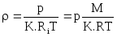
De dichtheid van een gasmengsel kan gevonden worden met:
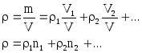
r1, r2, ...: de dichtheid van elke gascomponent
n1, n2, ...: het aandeel van elke component uitgedrukt in volumeprocenten
In plaats van de dichtheid r wordt vaak gebruik gemaakt van het specifiek volume v:
- voor een ideaal gas:
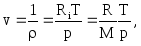
- voor een reëel gas:
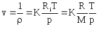
De gaswetten kunnen hiermee herschreven worden (bemerk hierbij de overeenkomst met de vroegere formuleringen):
- voor een ideaal gas:
- voor een reëel gas:
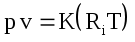
Figuur 4 geeft als alternatief voor deze formule het specifiek volume van oververhitte stoom als functie van druk en temperatuur.
Figuur
4
Net zoals bij vloeistoffen kan de toename van volume bij stijgende temperatuur uitgedrukt worden bij middel van de kubieke uitzettingscoëfficiënt van een gas, gedefinieerd als volgt:
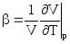
b geeft de relatieve volumetoename per graad temperatuurstijging bij gelijk blijvende druk en wordt uitgedrukt in:
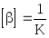
Bij linearisatie geldt in een beperkt temperatuursinterval:
Voor een ideaal gas geldt:
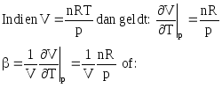
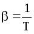
In het geval T = 273,15 K = 0 °C:
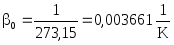
Deze waarde geldt voor alle gassen in zover ze voldoen aan de ideale gaswet. Laboratoriummetingen bevestigen dit merkwaardig resultaat.
Houdt men het volume van een gas constant, dan varieert de druk evenredig met de temperatuur. Deze variatie kan uitgedrukt worden met behulp van de spanningscoëfficiënt d, gedefinieerd als volgt:
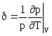
d geeft de relatieve druktoename per graad temperatuurstijging bij gelijk blijvend volume en wordt uitgedrukt in:
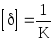
Voor een ideaal gas wordt dit:

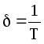
Voor een ideaal gas zijn de uitzettings- en de spanningscoëfficiënt dus identiek.
De specifieke warmtecapaciteit is de hoeveelheid warmte, die nodig is om de temperatuur van 1 kg van een bepaald product met 1 K te wijzigen. Deze grootheid wordt uitgedrukt in
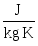.
In deel 1 hebben we reeds gewezen op het feit dat men een onderscheid moet maken tussen de specifieke warmtecapaciteit cp, die gemeten wordt bij constant gehouden druk, en cV, die gemeten wordt bij constant gehouden volume. Het verschil heeft te maken met het feit dat met een volumewijziging ook een energie-uitwisseling via arbeid plaats heeft. Bij vloeistoffen verschillen deze waarden niet veel en rekent men gewoonlijk met een benaderende waarde: .
Bij gassen is de volumewijziging beduidend en moet men dus wel degelijk een onderscheid maken tussen cp en cV: cp > cV.
Deze wordt gedefinieerd als de verhouding van vorige gegevens:
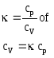
In het voorgaande werd gesproken over twee types gasconstanten:
- de individuele gasconstante Ri , die verschillend is voor elk gas:
- het is de mechanische arbeid, die door één kg gas per graad temperatuurstijging aan de omgeving kan afgegeven worden
- eenheden zijn:
- de universele gasconstante R, die voor alle gassen identiek is:
- het is de mechanische arbeid, die door één mol gas per graad temperatuurstijging aan de omgeving kan afgegeven worden
- eenheden zijn: 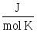
Er bestaan volgende verbanden tussen allerlei voornoemde grootheden:
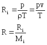
Mi is de molaire massa van stof i.
In de thermodynamica zal aangetoond worden dat:
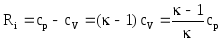
In tabel 2 vinden we een aantal van deze waarden terug.
1. Bepaal voor chloorgas Cl2 bij 25 °C en onder een overdruk van 5 bar volgende grootheden:
- de dichtheid
- het soortelijk gewicht
- het specifiek volume
- de individuele gasconstante
De molaire massa van chloorgas bedraagt M = 71 kg/kmol.
Oplossing:
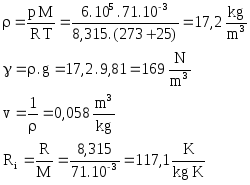
2. Bepaal de dichtheid van lucht bij 20 °C en bij 0 °C, telkens bij een ‘normale’ luchtdruk en in de veronderstelling dat lucht bij deze omstandigheden kan aangezien worden als een ideaal gasmengsel met een gemiddelde molaire massa M = 28,8 . 10 -3 kg/mol.
Oplossing:
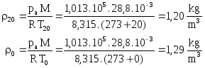
3. Bepaal het soortelijk gewicht van lucht bij een temperatuur van 30 °C en een absolute druk van 470 kPa.
Oplossing:
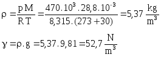
4. Figuur 5 stelt een compressor voor, die lucht onder druk levert aan de verbrandingskamer van een gasturbine. Aan de ingang van de compressor ontstaat een onderdruk van 1300 Pa, waardoor lucht uit de omgeving wordt aangezogen. De temperatuur van de lucht bedraagt aan de ingang van de compressor Ti = 30,6 °C. Na compressie wordt de lucht bij een temperatuur van Tu = 35,6 °C en onder een overdruk van 1000 Pa in de verbrandingskamer geblazen.
Figuur
5
Oplossing:
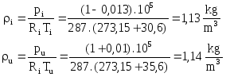
Het verschil tussen de dichtheid van de lucht aan de in- en de uitgang van de compressor is dus erg gering. We zouden ons kunnen afvragen of dit verschil in praktijk al of niet relevant is en we eventueel niet kunnen blijven werken met de dichtheid aan de ingang van de compressor. Eén en ander wordt duidelijk indien we bijvoorbeeld de opgemeten druk aan de uitgang van de compressor zouden gebruiken om de temperatuur Tu te schatten:
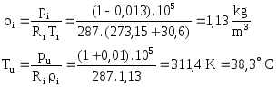
De fout op de eindtemperatuur van (38,3 - 36,5) = 1,8 °C zou erg belangrijk zijn indien men hiermee een energiebalans zou opstellen.
Figuur
6
De evenwichtsvergelijking
van Euler gaf bij vloeistoffen, die een nagenoeg constante dichtheid
r
vertonen, aanleiding tot het begrip ‘hydrostatische druk’:
deze neemt lineair toe met de diepte onder de vloeistofspiegel.
Vullen we een reservoir geheel of gedeeltelijk met een vloeistof dan
ontstaat er door dit lineair drukverloop op de wand een ongelijkmatig
verdeelde kracht: de onderzijde van de wand wordt relatief zwaarder
belast dan de bovenzijde. We stellen de resultante van deze
drukverdeling voor door de drukkracht FD,
die we in het drukpunt D moeten plaatsen (figuur 6).
Vullen we (een betrekkelijk klein) reservoir echter met een gas, dan gaan we ervan uit de dichtheid, de temperatuur en de druk in alle punten van het gas dezelfde is. De druk kan bepaald worden uit de gaswetten:
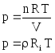
De kracht vanwege deze druk op een gedeelte van de wand van het reservoir is dan gelijkmatig verdeeld. De resultante ervan moet in het zwaartepunt van het oppervlak A geplaatst worden en kan berekend worden als:
FZ = p . A
Bekijken we de enorme luchtmassa omheen het aardoppervlak, dan liggen de zaken wel een beetje anders: de dichtheid van de lucht, de temperatuur en de druk variëren dan met de hoogte boven het aardoppervlak; in de vliegtuigbouw, de ruimtevaart en de meteorologie moet met deze variatie wel degelijk rekening gehouden worden. We berekenen ze in de veronderstelling dat de veranderingen in chemische samenstelling van de lucht, de variatie van de gravitatieversnelling en de invloed van de aardrotatie verwaarloosbaar zijn.
Figuur
7
We moeten een onderscheid
maken tussen verschillende gebieden in de atmosfeer, die ook nog eens
van plaats tot plaats op de aarde verschillen; zo begint de
stratosfeer, die aan de evenaar op ongeveer 17 km hoogte begint, aan
de polen reeds vanaf 8,5 km boven zeeniveau. In figuur 7 werden de
verschillende delen van de atmosfeer voorgesteld, zoals ze gebruikt
worden in de ‘US Standard Atmosphere’.
- in de troposfeer, tot op ongeveer 11 km hoogte, neemt de temperatuur nagenoeg lineair af in functie van de hoogte;
- in de stratosfeer, van ongeveer 11 km tot ongeveer 20,1 km hoogte, heerst er een constante temperatuur van -56,6 °C;
- in de ionosfeer neemt de temperatuur terug toe.
Met deze gegevens berekenen we nu de drukvariatie in de tropo- en in de stratosfeer. In de ionosfeer kan de ‘luchtlaag’ niet meer als een continuüm aangezien worden.
Combinatie van de evenwichtsvergelijking van Euler (1) met de ideale gaswet (2) levert:
(1)
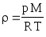 (2)
In vergelijking (3) voeren we de temperatuursvariatie , , in
T0 : de temperatuur op zeeniveau = 15 °C = 288,15 K
B : 0,00650 K/m
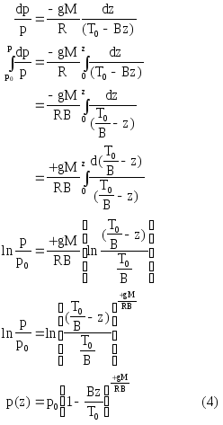
De temperatuur is hierin constant: TC = - 56,6 °C = 216,7 K
Vergelijking (3) wordt in dit geval:
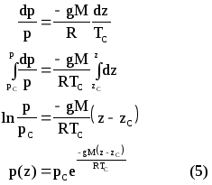
Deze wordt gevonden door substitutie van bovenstaande uitdrukkingen (4) en (5) in de gaswet (2).
De hierboven besproken waarden voor de ‘US Standard Atmosphere’ spelen een belangrijke rol in praktijk. Zo dienen ze onder andere als een soort referentiewaarde voor heel wat parameters, die gebruikt worden in de luchtvaart. Eerder dan ze met bovenstaande formules te berekenen worden ze overgenomen uit opgestelde grafieken en tabellen zoals deze van figuur 8 en van tabel 3.
Tabel
3
Figuur 8
1. Bepaal de luchtdruk op 11 km hoogte, de grens van de stratosfeer.
Oplossing:
Formule (4) wordt:
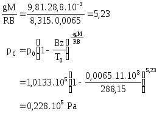
2. Bepaal de luchtdruk op 15 km hoogte dus ergens in de stratosfeer. Vergelijk deze berekende waarde met deze op grafiek 8 en in tabel 3.
Oplossing:
Formule (5) wordt:

3. Een luchtballon heeft een massa van 500 kg en heeft een volume van 700 m3. Tot op welke hoogte kan deze ballon opstijgen?
Oplossing:
De ballon stijgt zo lang tot de opwaartse stuwkracht, die kan bepaald worden uit de wet van Archimedes, in evenwicht is met het gewicht van de ballon; de ballon ‘zweeft’ dan ‘vrij’ door de lucht:
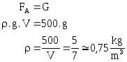
Uit tabel 3 lezen we af dat deze dichtheid bereikt wordt op ongeveer 5300 meter hoogte. Deze (benaderende) waarde lezen we ook af op grafiek 8 en zou kunnen berekend worden uit formule (6).
Een kubieke meter lucht weegt 12 N onder een druk van 1013 hPa en bij een temperatuur van 15 °C. Bepaal uit deze gegevens het specifiek volume van lucht in dezelfde condities.
Oplossing: 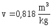
Bepaal het aantal moleculen en het aantal mol in 1 m3 lucht bij 1013 hPa en 0°C.
Oplossing: 44,63 mol
Men meet voor een ijl gas een specifiek volume op van 0,65 m3/kg onder een druk van 200 hPa en bij een temperatuur van 40°C. Bepaal de individuele gasconstante voor dit gas evenals het moleculair gewicht ervan.
Oplossing: 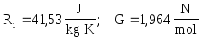
Een kubieke meter stikstof onder een druk van 340 kPa en bij een temperatuur van 40 °C wordt isotherm samengedrukt tot een volume van 0,2 m3. Hoe groot is de druk bij het einde van deze compressie. Bepaal eveneens de elasticiteitsmodulus bij het begin en bij het einde van de compressie.
Oplossing:
In een cilindrische zuiger bevindt zich oorspronkelijk 0,120 m3 lucht onder een druk van 1 atmosfeer (=1013 hPa). Via een isotherme compressie wordt het volume gereduceerd tot 0,05 m3. Bepaal de druk in deze eindtoestand.
Oplossing:
Een reservoir met een inhoud van 20 liter bevat 0,28 kg helium bij 27 °C. De molaire massa van helium bedraagt 4 g/mol.
hoeveel mol helium bevat het reservoir?
bepaal de druk in het reservoir.
Oplossing:
In een cilindrische opslagtank bevindt zich 0,5 m3 stikstof bij 27 °C en onder een druk van 1,5 x 105 Pa. Bepaal de druk in het reservoir wanneer het volume 4 m3 bedraagt en de temperatuur 327 °C.
Oplossing:
Bij het begin van de compressieslag bevat de cilinder van een dieselmotor 800 cm3 lucht onder een druk van 1013 hPa en bij een temperatuur van 27 °C. Op het einde van de compressie werd de lucht gecomprimeerd tot een volume van 75 cm3 onder een overdruk van 2,25x106 Pa. Bepaal de temperatuur op het einde van de compressie.
Oplossing:
Een persoon vult bij het inademen zijn longen (inhoud 6 liter) volledig met lucht onder een druk van 1013 hPa. Door het spannen van de buikspieren wordt het longenvolume gereduceerd tot 5,5 liter. Welke druk ontstaat hierdoor in de longen, in de veronderstelling dat de temperatuur van de lucht gelijk blijft.
Oplossing:
De wand van een gasfles met een inhoud van 2,5 liter werd berekend om een druk van 100 atmosfeer (1 atmosfeer = 1013 hPa) te kunnen weerstaan. Men vult de fles met 8 mol van een nagenoeg ideaal gas bij een temperatuur van 23 °C. Tot welke temperatuur mag het gas in deze fles opgewarmd worden?
Oplossing:

Hoeveel moleculen bevat een pint van 25 cc gevuld met zuiver water? De molaire massa van water bedraagt 18 g/mol.
Oplossing:
Op een winterse dag, bij een temperatuur van 5°C en een druk van 1,03 atmosfeer (1 atmosfeer = 1013 hPa), meet men de bandenspanning van een autoband met een inhoud van 0,015 m3: deze bedraagt 2 atmosfeer overdruk. Bepaal de bandenspanning na 30 minuten rijden, wanneer de temperatuur van de banden 47 °C bedraagt, waardoor het volume uitgezet is tot 0,016 m3.
Oplossing:
Schat het aantal mol, moleculen, atomen, waaruit uw professor bestaat, uitgaande van de veronderstelling dat hij:
90 kg weegt (een onderschatting)
voor het overgrote deel uit water (een overschatting) (H2O) bestaat bij 37 °C en 1 atmosfeer
de moleculaire massa van water 18 g/mol bedraagt
elke watermolecule uit drie atomen bestaat.
Oplossing:
Een fles van 1,2 liter wordt gevuld met zuurstof en afgesloten met een “waterslot”, dat ervoor zorgt dat de druk in de fles gelijk blijft aan 1 atmosfeer (=1013 hPa). Men verwarmt de fles tot een temperatuur van 400 K. Men sluit nu ook het “waterslot” af zodat geen zuurstof uit de fles meer kan ontsnappen. Men laat de fles afkoelen tot 27 °C.
Hoe groot is de druk in de fles?
hoeveel gram zuurstof bevat de fles?
De moleculaire massa van zuurstof bedraagt 32 g/mol.
Oplossing:
15. Het werkingsprincipe van een warme-lucht-ballon is gebaseerd op het feit dat de dichtheid van warme lucht bij eenzelfde omgevingsdruk lager is dan deze van de omgevende koude lucht. Welke temperatuur moet de warme lucht in een ballon met een volume van 500 m3 hebben om een last van 250 kg (bovenop het gewicht van de warme lucht) te kunnen vervoeren in een luchtlaag waar de temperatuur 0 °C en de druk 1 atmosfeer bedraagt. De dichtheid van de omgevende koude lucht bedraagt dan 1,29 kg/m3.
Oplossing:
Een experimentele ballon heeft een inhoud van 500 m3. Hij wordt gevuld met waterstof onder atmosferische omstandigheden (1013 hPa).
hoeveel reservoirs waterstof heeft men nodig om de ballon volledig te vullen? Men gebruikt reservoirs met een inhoud van 2,5 m3, die de waterstof bewaren onder een druk van 2,5x106 Pa. We veronderstellen dat de temperatuur van de waterstof bij het overslaan niet wijzigt.
hoeveel ballast (bovenop het gewicht van de hoeveelheid waterstof in de ballon) kan men met deze ballon vervoeren in de veronderstelling dat hij moet zweven in een luchtlaag, waar de temperatuur 0° C en de dichtheid van de omgevende lucht 1,29 kg/m3 bedraagt? De molaire massa van waterstof bedraagt 2,02 g/mol.
hoeveel ballast kan men in dezelfde omstandigheden vervoeren indien men helium zou gebruiken in plaats van waterstof? De molaire massa van helium bedraagt 4 g/mol.
Oplossing:
Fysica van Fluïda 1998-1999